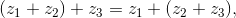
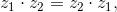
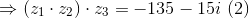
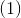
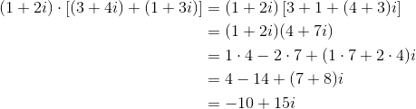
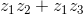

Operații cu numere complexe
Capitolul Operații cu numere complexe conține informații referitoare la operațiile care se pot efectua cu numerele complexe, așa cum este sugerat și în titlu.
În acest ghid, cele două operații cu numere complexe abordate de către profesorii de matematică din cadrul echipei Liceunet sunt adunarea numerelor complexe și înmulțirea numerelor complexe. Astfel, se introduc aceste două operații cu numere complexe și se prezintă proprietățile acestora, printre care enumerăm: asociativitatea, comutativitatea, existența elementului neutru și altele.
Conceptele introduse și proprietățile corespunzătoare sunt însoțite de exemple ilustrative sau chiar demonstrații, pentru ca tu să înțelegi cât mai bine informațiile din acest capitol și pentru a te descurca să rezolvi exerciții cu operații cu numere complexe.
Accesează cu încredere acest capitol al ghidului nostru despre numerele complexe și învată cum se folosesc corect în rezolvarea exercițiilor proprietățile celor două operații cu numere complexe.
Adunarea numerelor complexe
Definiția NC3: Suma a două numere complexe
Fie  și
și  două numere complexe. Se numește suma numerelor complexe și
două numere complexe. Se numește suma numerelor complexe și  numărul complex .
numărul complex .
Exemplu:
Dacă și , să se calculeze suma celor două numere complexe și .
Rezolvare:
.
Propoziția NC4: Proprietățile adunării numerelor complexe
- Adunarea numerelor complexe este asociativă:
 oricare ar fi
- Adunarea numerelor complexe este comutativă:
oricare ar fi 
- Adunarea numerelor complexe admite ca element neutru pe „
 ”:
”:
pentru orice  unde
unde
 .
.
- Orice număr complex admite un opus :
 pentru orice
pentru orice 
Exemple:
- Se consideră trei numere complexe
 , și . Să se verifice asociativitatea adunării celor trei numere complexe , și
, și . Să se verifice asociativitatea adunării celor trei numere complexe , și  .
.
Rezolvare:
Trebuie să arătăm că .

- Se consideră și două numere complexe. Să se verifice dacă (comutativitatea adunării).
Rezolvare:
Arătăm că .
- Fie . Să se verifice existența elementului neutru „”.
Rezolvare:
Avem că

Așadar, .
- Să se calculeze opusul numărului complex .
Rezolvare:
.
Înmulțirea numerelor complexe
Definiția NC5: Produsul a două numere complexe
Fie și două numere complexe. Se numește produsul numerelor complexe și numărul complex
 .
.
Exemplu:
Să se calculeze  , știind că
, știind că  și .
și .
Rezolvare:
.
Propoziția NC6: Proprietățile înmulțirii numerelor complexe
- Înmulțirea numerelor complexe este asociativă:
 oricare ar fi
oricare ar fi
- Înmulțirea numerelor complexe este comutativă:
 oricare ar fi
- Înmulțirea numerelor complexe admite ca element neutru pe „
 ”:
”:
pentru orice unde
.
- Orice număr complex admite un invers , unde
.
În plus, avem că
pentru orice 
- Înmulțirea numerelor complexe este distributivă față de adunare:
oricare ar fi
Exemple:
- Se consideră trei numere complexe , și . Să se verifice dacă următoarea relație este adevărată:
. (Asociativitatea înmulțirii numerelor complexe - Propoziția NC6, a.)
Rezolvare:

Din relațiile  și  rezultă că are loc și deci înmulțirea este asociativă.
rezultă că are loc și deci înmulțirea este asociativă.
- Fie și . Să se verifice dacă înmulțirea celor două numere complexe și este comutativă. (Verificăm dacă are loc Propoziția NC6, b.)
Rezolvare:
Rezultă că înmulțirea numerelor complexe și este comutativă.
- Să se verifice dacă este element neutru în raport cu operația de înmulțire pentru numărul complex . (Verificăm Propoziția NC6, c.)
Rezolvare:
Pentru că înmulțirea numerelor complexe este comutativă, avem că .
Deci , ceea ce înseamnă că este element neutru la înmulțire.
- Se consideră numerele complexe , și . Să se verifice următoarele proprietate:
. (Propoziția NC6, e.)
Rezolvare:
Calculăm .

Calculăm .
Din relațiile și rezultă că are loc distributivitatea înmulțirii față de adunare.